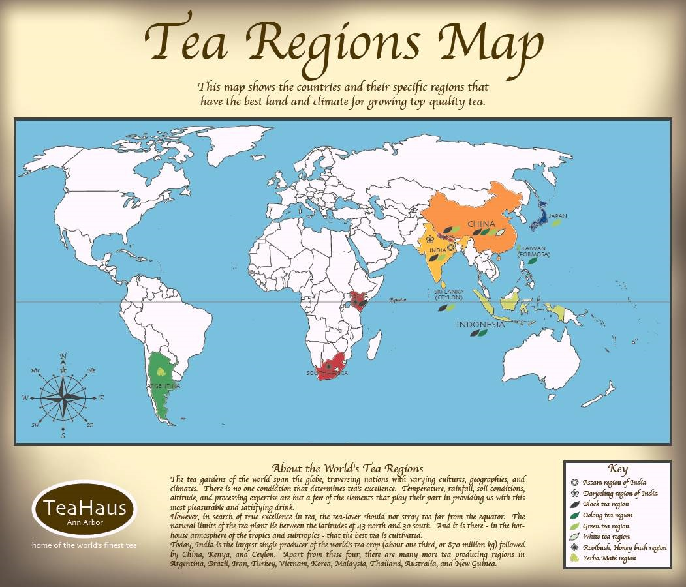

")
")
Originating from China, where it is known from ancient times, tea is known as the second most widely consumed drink in the world after water.
According to legend, it was born in the year 2737 B.C., when the leaves fall into the warm water of the Chinese emperor Shennong. Containers for tea have been found in tombs dating from the Han dynasty (206 BC - 220 AD).
Tea became such a common beverage from the Tang dynasty (from VIth century to the beginning of IXth century). In the IXth century, tea was introduced to Japan and the Arab world. In Europe, the first tea commercial import were delivered in 1606, in Amsterdam, Netherlands. In the late XVIIIth century, England developed opium cultivation in India in exchange for Chinese tea. In the XIXth century, as China did not have tea enough to provide a rising Western demand, England developed tea cultivation in India, Sri Lanka and Africa. Today, the major tea producers in the world are China, India, Sri Lanka, Kenya and Turkey.
Here is a map of tea regions which have been providing best quality products for the world today :

Black and green teas are mostly grown in China, India and Sri Lanka and Southeast Asian countries.
China, Taiwan and Indonesia are places those are centralized all favorable natural conditions for a best quality Oolong tea.
India is well known for an excellent black tea named Darjeeling which is also name of a land in North of India. Darjeeling is very popular in England because of its very special taste: the delicate mixture of subtle flower and grass scent, bitterness and the characteristic smell of Muscat.
Harsh climate of Kenya and South Africa provides favorable conditions for development of Rooibush tree (Rooibos). This herbal tea in red grows exclusively in these two countries and is now being exported all over the world. Its success comes from the naturally perfumed flavor and mildly sweet taste but above all is the ability to cure a variety of canadarxcenter.com as asthma, allergies, insomnia, indigestion and skin irritation.
South America is known for Yerba Mate tea. People said that «Yerba Mate has strength of coffee, the health benefits of tea, and the euphoria of chocolate» - all in one beverage. Yerba Mate tea benefits are for brain and muscles enhancing, treating digestion and diuretic.
Vietnam is famous in the world for traditional jasmine and lotus tea.
© NGUYENteacoffee.com